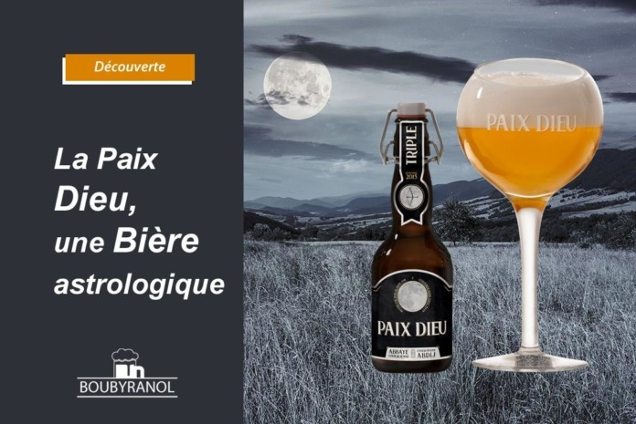

La Paix-Dieu
Cette bière blonde était autrefois produite à l’abbaye de Paix Dieu, où le calendrier lunaire jouait un rôle central. Afin de conserver l’âme de l’abbaye, la Brasserie s’impose la rigueur de ne brasser que par période de pleine lune. Et quel résultat obtient-on ? Une triple de 10% onctueuse et pleine de caractère; une bière artisanale dans la plus pure tradition des bières belges d’abbay Composé notemment de houblon, malt et sucre étant sélectionnés soigneusement auprès de producteurs locaux. L’eau est tirée directement du puits de la brasserie, et la levure est cultivée par leurs soins.. Son degrès est de 10.